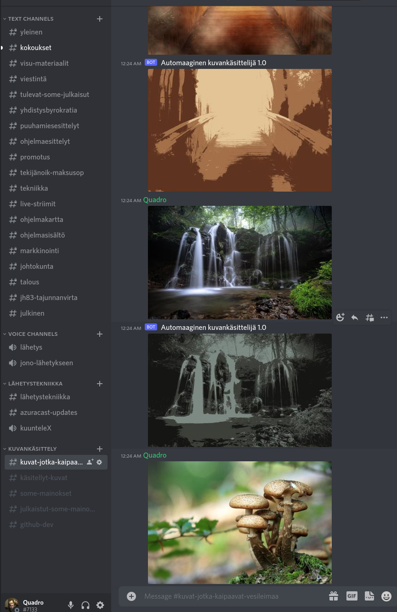

Olen erään nettiradion tekniikkavastaava.
Kokouksessa tuli puheeksi sosiaalisen median mainosten tekemisen vaikeus, sillä useat radiojuontajat haluaisivat vaikuttaa mainoksiin, mutta eivät osaa käsitellä kuvia.
Olin jo aiemmin päättänyt opiskella Discord-botin tekemistä, joten siitä se ajatus sitten lähti.
Botti kuuntelee Discord-kanavaa #kuvat-jotka-kaipaavat-käsittelyä, josta se tallentaa viestit logitiedostoihin ja poimii liitteet, jotka ovat kuvatiedostoja. Liite käsitellään Python-kielen kirjastolla, jonka jälkeen
se lähetetään #käsitellyt-kuvat -kanavalle.
Github: Discord botti
